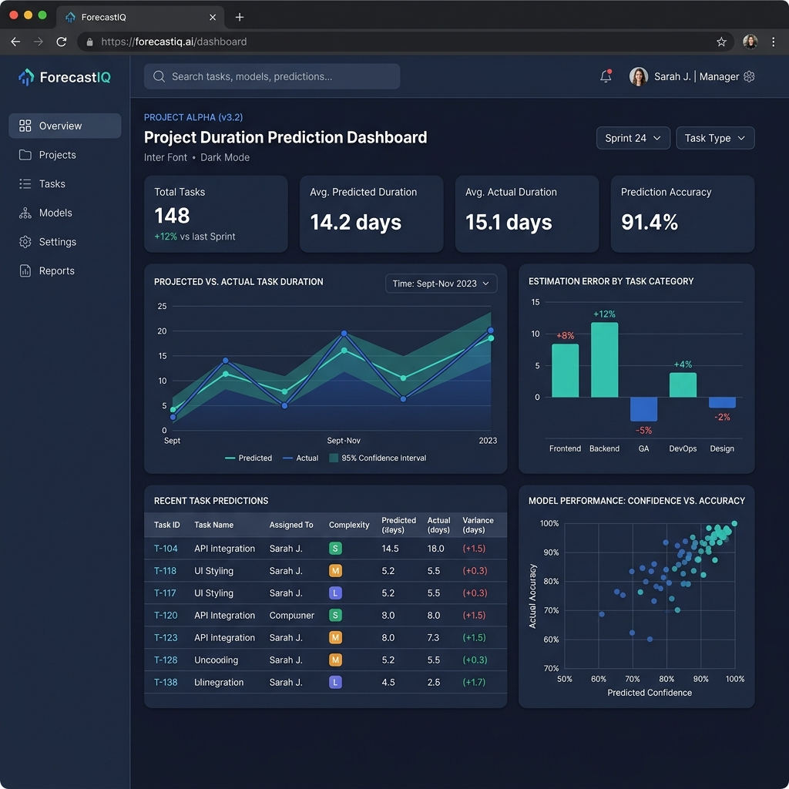
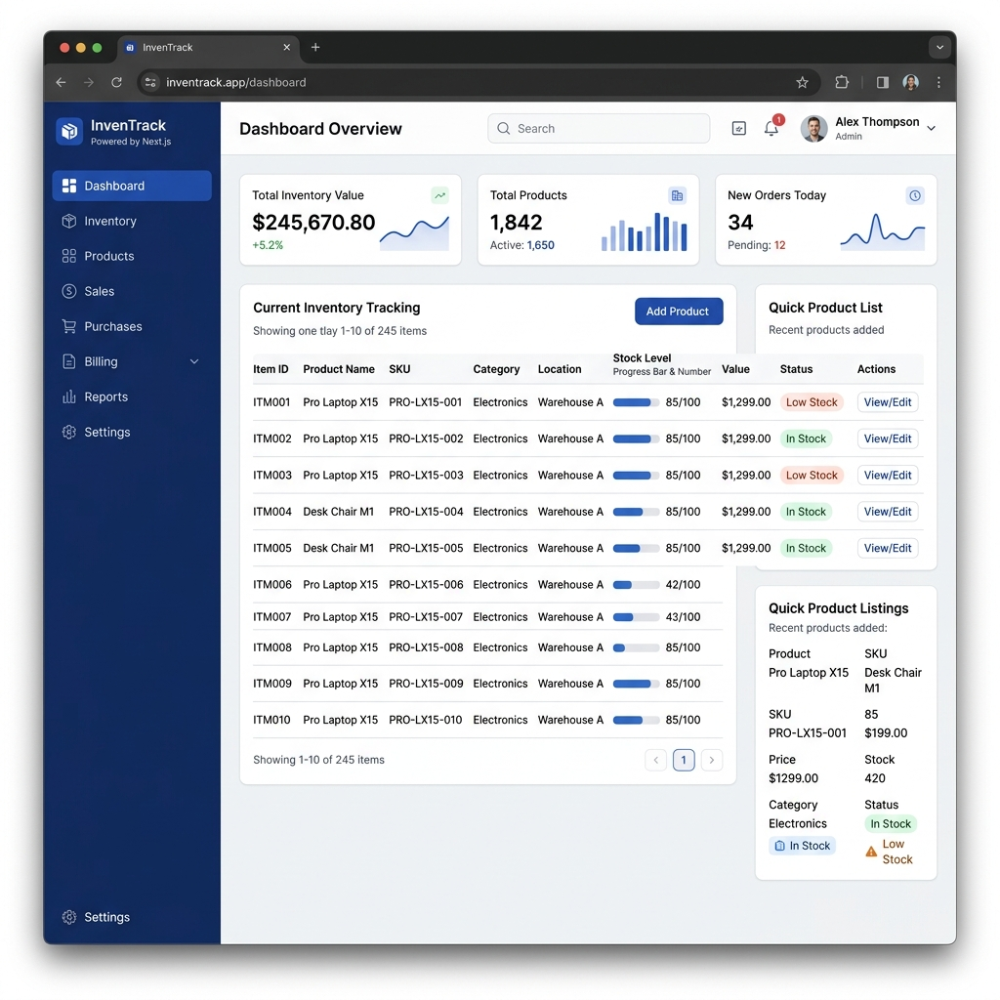
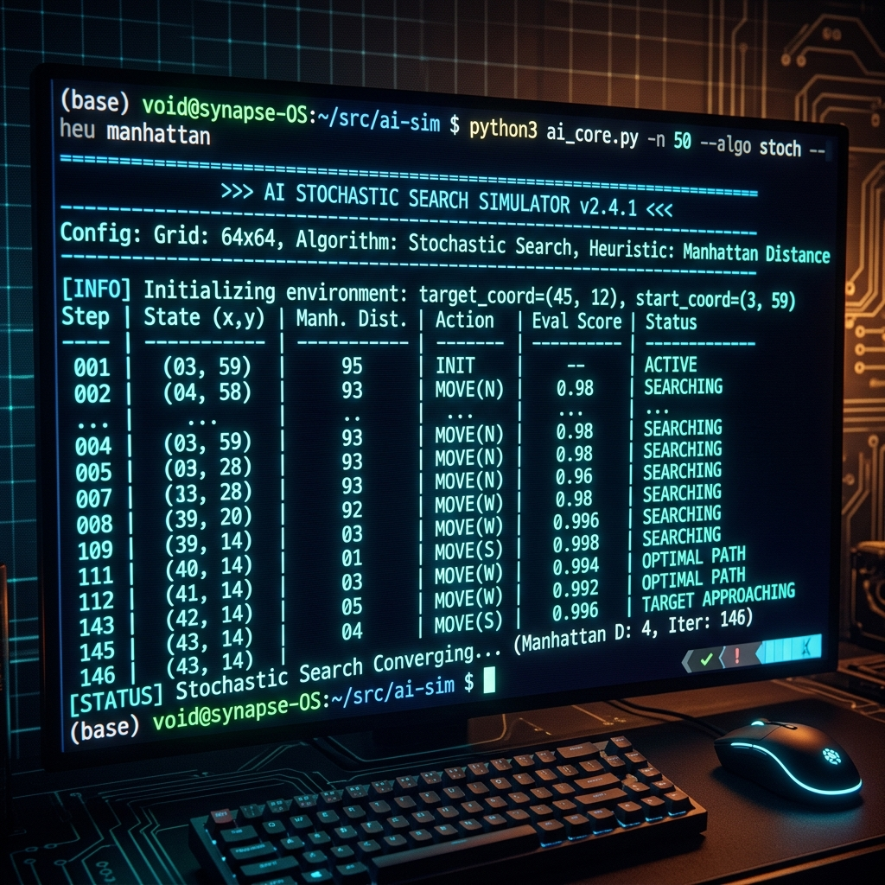
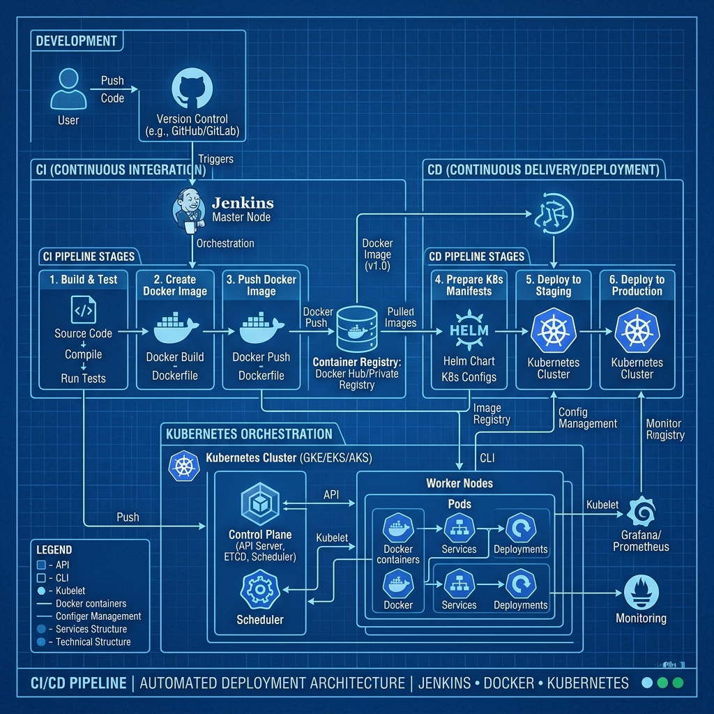
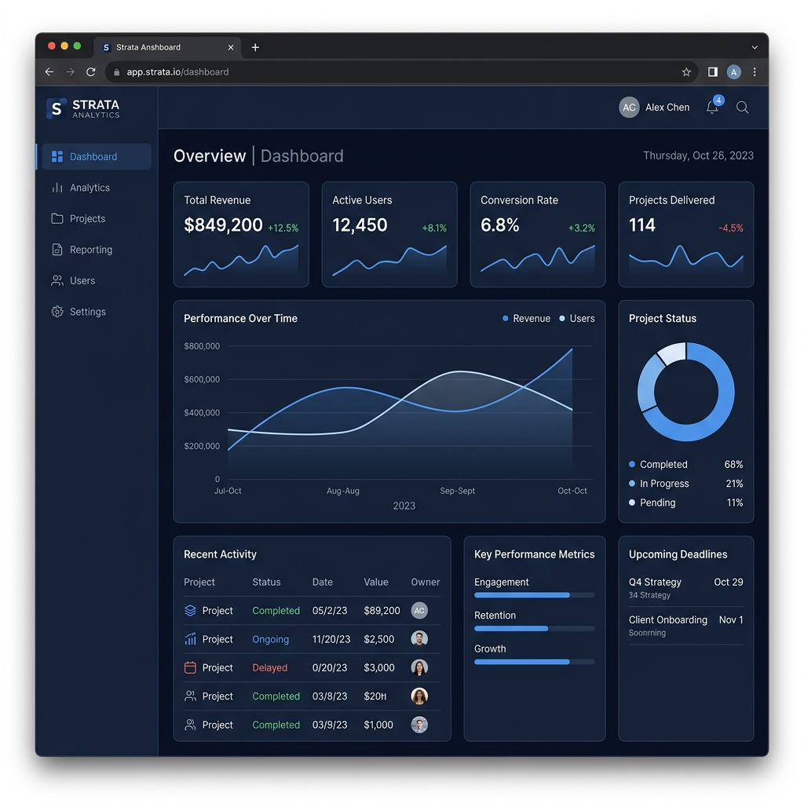
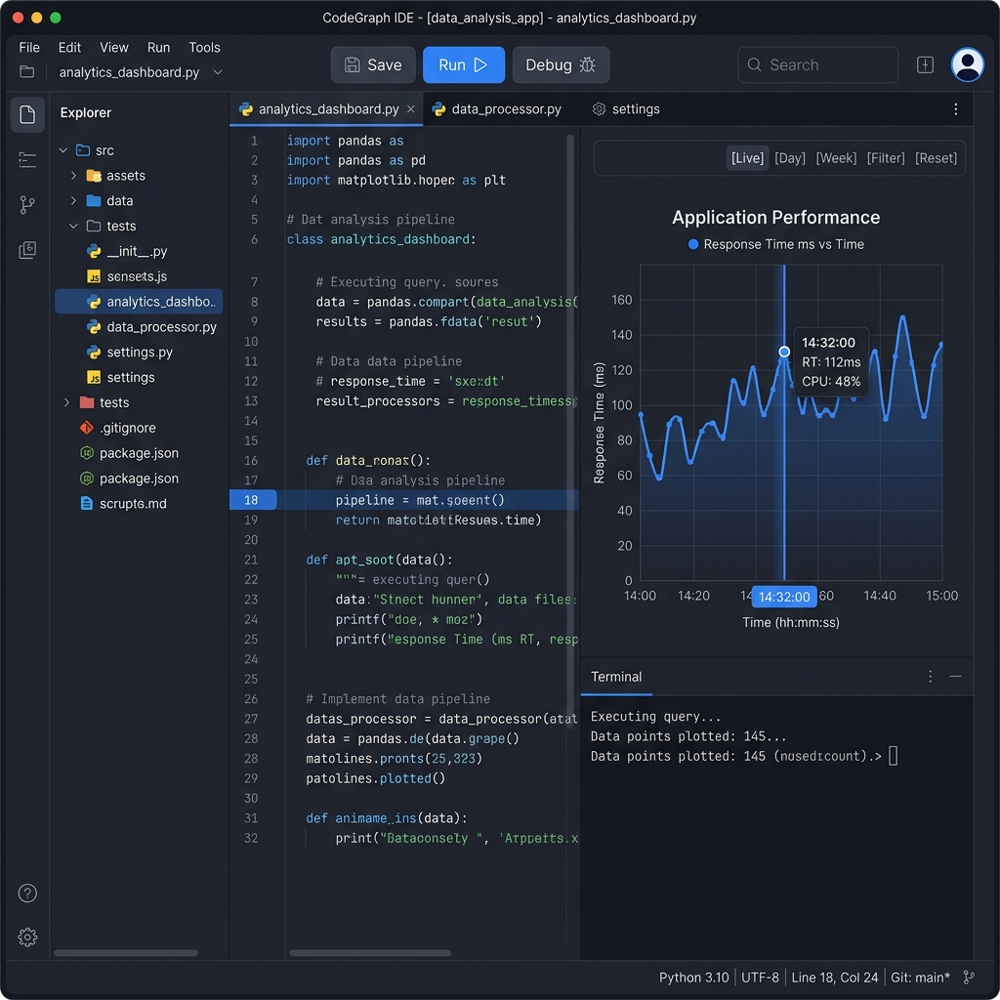

Software Engineer & Project Manager | Bridging Technical Execution with Product Strategy
I am an analytical 3rd-year Integrated M.Tech Software Engineering student at Vellore Institute of Technology (VIT), maintaining an 8.3 CGPA. My focus lies at the intersection of technical execution and product strategy, specializing in Software Quality Assurance, Requirement Analysis, and Project Management. I thrive in high-pressure environments, whether that involves architecting full-stack web applications or coordinating large-scale campus initiatives. I will be completing my final assessment tests shortly and am actively seeking software engineering and research internship opportunities starting from May 10, 2026.
Beyond writing code and mapping system architectures, I am deeply interested in analyzing hardware performance specifications and exploring complex environments in simulation games. Off-screen, I draw creative inspiration from the coastal and ocean themes of Tamil cinema and its accompanying music.
Lead executive operations and content strategy, coordinating student teams for campus-wide broadcasting. Managed logistics for 5+ major campus events, ensuring process transparency and strict quality standards.
Streamlined the documentation process and managed all technical and non-technical content delivery for the event. Collaborated across various committees to ensure high-quality, consistent, and accurate project documentation and technical specifications.
Managed outreach campaigns and real-time communication schedules for VIT's annual technical festival. Collaborated with developers and project leads to resolve logistical bottlenecks across technical and non-technical teams.

Developed a web-based tool using TypeScript and statistical modeling to predict task durations and software effort. Applied SPM principles to enhance planning accuracy by 20% through systematic estimation and risk mitigation.

Architected a full-stack prototype for inventory and billing management using Next.js and React.js for a housekeeping products manufacturer. Executed extensive manual functional and smoke testing, reducing inventory tracking errors by 30%. Resolved critical edge-case bugs in transaction reversal logic and PDF generation systems.

Built a Python-based simulator implementing stochastic search and knowledge-based agents using Manhattan distance heuristics. Documented comprehensive system architecture, including detailed flowcharts and technical specifications.

Architected and deployed an automated CI/CD pipeline for an Online Quiz System using Jenkins, Docker, and Kubernetes. Ensured reliable continuous delivery and scalable container orchestration for real-time application usage.

Feedback system developed for Agile testing lab

A gritty HTML/CSS/JS engine simulating data collision rates and tactical throughput efficiency for Pure ALOHA vs CSMA/CD.
An AI agent that uses knowledge-based logic to play Minesweeper.
Predictive data mining system using a Hybrid ARIMA-NNETAR ensemble and DWT denoising to forecast software technology lifecycles from Stack Overflow data.
A robust, containerized Java application for evaluating online quiz submissions. Features comprehensive JUnit testing, a Dockerized environment, Jenkins CI/CD pipelines, and Kubernetes deployment configurations.
A JavaScript project.
Python, Java, C++, SQL, TypeScript, HTML
Manual Testing, Functional Testing, Test Case Design, End-to-End (E2E) Testing (Cypress)
Software Project Management (SPM), User Experience (UX) Journey Mapping, System Architecture, Technical Writing
Jenkins, Docker, Kubernetes, Git/SCM, MS-Excel
React.js, Next.js, Backend Development
Contributed to innovative technical solutions for World Entrepreneurship Day organized by the Institution's Innovation Council (IIC) at VIT.
Completed a job simulation focused on empowering business through effective data insights.
Successfully completed the internship game and earned a certificate of participation.